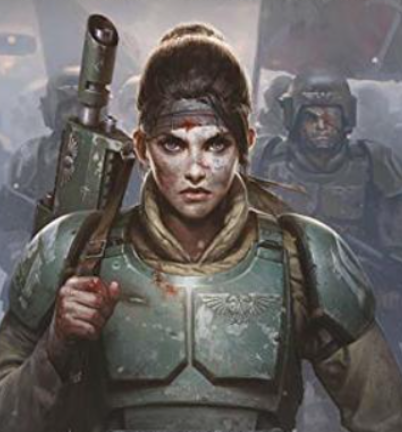

Cadia Prime
Cadia was a fortress world guarding the Cadian Gate, the main passage to the Eye of Terror. Its disciplined military and defenses held Chaos at bay for millennia.

The Cadian Shock Troops
The Cadian Shock Troops were among the best-trained regiments of the Imperial Guard, known for their discipline, advanced tactics, and standard-issue lasguns.

The Fall of Cadia
During the 13th Black Crusade, Cadia fell to Abaddon the Despoiler after an intense battle. Despite their bravery, the planet was ultimately destroyed.
Legacy of Cadia
Even after its fall, the spirit of Cadia lives on through its surviving regiments, who fight across the galaxy, carrying the motto: "Cadia Stands!"
